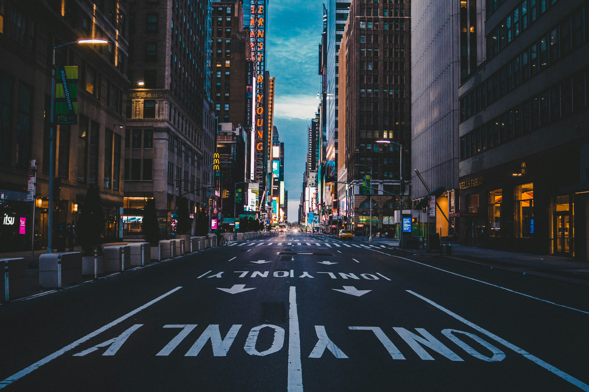
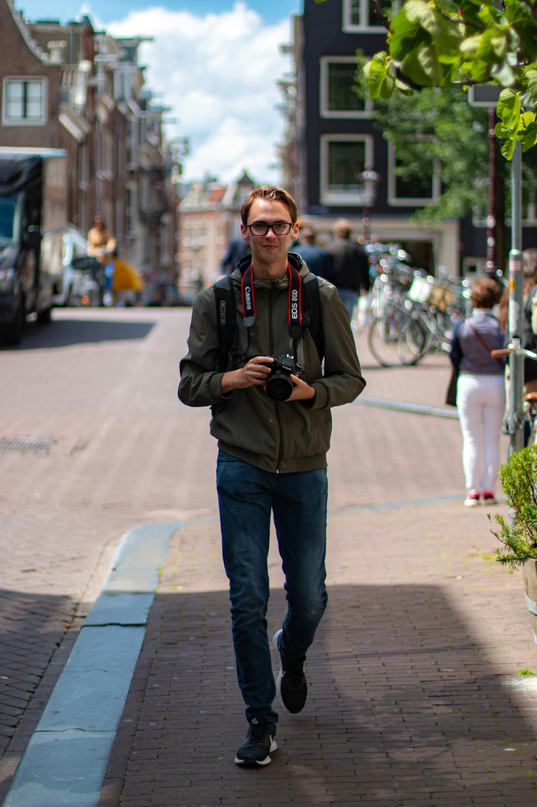

NYC Photography
New York City is full of talanted photgraphers. With the beautiful scenary, popular tourist attractions and high population, NYC generally draws in many tourists, and photographers, to capture the sights and scenary of NYC.
Skyline Shots



While New York City does have many of tourist attractions, here are some of the most popular places:
- Times Square
- Statue of Liberty
- Empire State Building
- Freedom Tower
"You dont take a photgraph, you make it" - Ansel Adams
A quote, which is more then just words to every photographer. Photography, isn't just a picture, it's the ability to hold a moment forever. The pictures we have today, if it weren't for aspiring photographers, would cease to exist. We are lucky to have such skilled and gifted individuals today, to capture the world we live in, its it's full beauty and nature.
